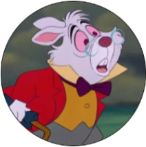
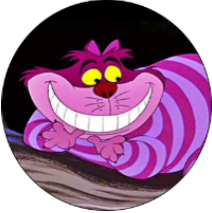
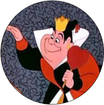
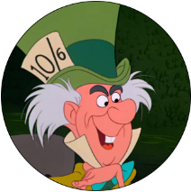
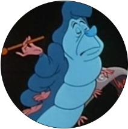
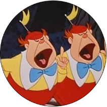

본문콘텐츠영역
story
In the 19th century, Alice's father, Charles Kingsley, who was in a meeting about business, began by putting her to sleep when little Alice, who had a nightmare, came. The father was an open-minded man who did not fit the century, and Alice was greatly influenced by him.
Alice, 19, rides a wagon to an engagement party that only she doesn't know. And dancing with Mama Boy Hamish, he speaks his mind, but Hamish doesn't understand such Alice and tells her to come to the pavilion exactly 10 minutes later. Then the twin sisters show up and reveal that Hamish is going to propose, and Alice's older sister Margaret, who finds it, angrily takes them and tells them it was actually an engagement party. Alice, who doesn't want to marry and live stiflingly to pushy and uninteresting Hamish, refuses, but her sister scolds her.
The way of thinking of the century is getting scary. While her mother-in-law was taking a breathtaking garden walk and listening to all kinds of patriarchal nagging, Alice, who found the rabbit, found her aunt and discovered the scene of her brother-in-law's affair. Then, half-forced by Hemish in front of more than 100 people, Alice runs away with the white rabbit and falls into a cave under the tree, as if it were broken. The oraculum says "Alice's Return Day" from the Red Queen era.
original
▽
-
story
Alice, who does something else while listening to her sister's history story, is an imaginative girl. Alice imagines a world where animals and plants such as cats and flowers speak human words and books only have pictures instead of letters. Alice daydreams, saying that her world must be a strange country, and at that moment she sees a white rabbit running away. Alice, who was about to enter the rabbit hole where the rabbit disappeared, suddenly falls into the hole, but Alice's skirt swells up due to the wind and acts as a blue parachute, and thanks to her skirt, Alice slowly goes down. And after a long time, they chase the rabbit again. The rabbit door was opened in layers, and when he entered, he found a very small door. I thought the door handle would say something, but when Alice tried to pass, she told me to take medicine on the table, saying it was too big. Alice, who took the medicine, soon became smaller and pleased to ask for permission to pass, suddenly tackles that the handle left the key behind. Then somewhere, a box of snacks appears and Alice eats them, and this time she becomes very big. Alice burst into tears in sorrow that she could not get smaller again, and the tears fell to form the sea, and this time she drank all the medicine in the bottle according to the advice of the door handle, it became too small.
-
Character
White Rabbit
Cheshire Cat

Alice
Queen of hearts
Hatter
Caterpillar
Tweedledee & Tweedledome
March Bunny
-
writer
.
.
His real name is Charles Rutwidge Dodgson and Lewis Carroll. She is widely known as a Victorian mathematician, novelist, photographer, and author of Alice in Wonderland, and a leading author of early photographic history. Representative works include Alice in Wonderland published in 1865, and Alice in Mirrorland published in 1872. The impact of this work on society as a whole was great. There was no field without Alice Mania, which inspired philosophers, mathematicians, physicists, and psychologists. Especially in physics, it is cited as the licorice of medicinal herbs when describing Big Bang cosmology, Chaos theory, relativity theory, and quantum mechanics. There's even a disease called Alice's syndrome in Wonderland.
.
.